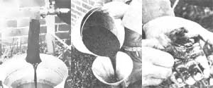
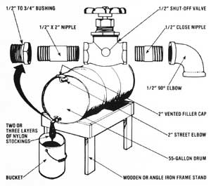

In response to a number of letters asking for advice, here's how to
Well. cold weather has settled in again, and you can bet your bottom dollar that quite a few folks are scratching for an effective, inexpensive way to heat their homes this winter season. Many such people have turned to wood as a source of warmth for their abodes ... but, of course, not all of us have the kind of access to low-cost timber that makes wood heat really economical.
Happily, though, MOTHER's crew of researchers came up with a dandy little furnace last winter (see MOTHER NO. 53, page 104) that uses waste motor oil-drained from cars, trucks, buses, etc.-as a source of (for the most part) free fuel! Better yet, the stove is so simple in design that just about anyone can build it in a day's time ... for a total cost of less than $40!
Of course, the used lubricant taken from an automobile's crankcase is bound to be dirty, so it must be filtered before use ... and-unless you want to spend a lot of time and money (not to mention energy) on a complicated system of hoses, pumps, and filters-we think the best way to go about tidying up your "motor squeezin's" is to fashion the setup depicted here. Give it a try ... and happy heating!
EDITOR'S NOTE: You can obtain a copy of MOTHER NO. 53 by sending $3.00 plus $1.00 for shipping and handling to THE Mother Earth News, P.O. Box 70, Hendersonville, North Carolina 28739. Furthermore, detailed step-by-step plans for the construction of MOTHER's Waste-Oil Heater-including drawings of a fuel feed system, troubleshooting tips, and several "to scale" template illustrations-can be obtained for $10 postpaid from Mother's Plans, P.O. Box A, East Flat Rock, North Carolina 28726.
|
 ABOVE, LEFT TO RIGHT. The oil is run through stockings clamped onto the spigot ... and poured into your stoves reservoir... The system removes grit like this. |
 |
|